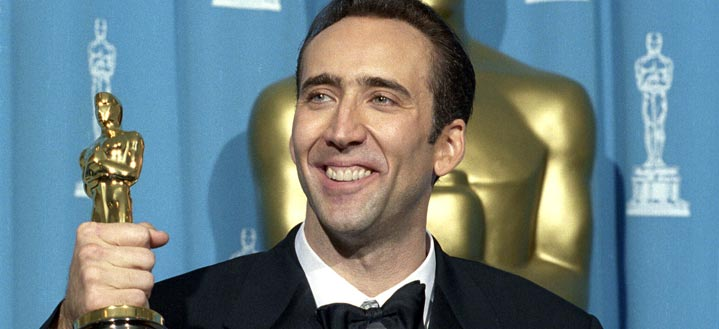

- 1964 - Nicolas Cage naît le 7 janvier 1964 à Long Beach en Californie. Fils d’Auguste Coppola et de Joy Vogelsang, il est aussi le neveu du réalisateur Francis Ford Coppola.
- 1983 - Nicolas Cage tourne pour son oncle, le réalisateur Francis Ford Coppola, dans Rusty James. L'acteur va par ailleurs multiplier les apparitions dans plusieurs de ses films ("Peggy Sue s'est mariée", "Cotton Club"...).
- 1990 - Le film "Sailor et Lula" de David Lynch lui assure une première consécration.
- 1995 - Pour son rôle d'alcoolique déchu (inspirée de la vie de John O'Brien) dans "Leaving Las Vegas", Nicolas Cage remporte l'Oscar du Meilleur acteur en 1995. Une statuette méritée : pour se glisser dans la peau de O'Brien, l'acteur a lui-même enchaîné les beuveries dans les bars et fréquenté les alcooliques dans les hôpitaux.
- 1996 - Le producteur Jerry Bruckheimer voit en Nicolas Cage une star du film d'action et l'engage pour "The Rock". Par la suite, l'acteur se spécialisera dans le genre ("Les Ailes de l'enfer", "Volte/face"...).
- 1997 - Nicolas Cage a été élu 40ème plus grande star du cinéma de tous les temps par le magazine anglais Empire !
- 2001 - Nicolas Cage et Patricia Arquette mettent fin à leur union en mai 2001 après six de mariage.
- 2004 - Il épouse une jeune femme nommée Alice Kim en juillet 2004 avec qui il a eu son second un fils : Kal-el, né en octobre 2005. Kal-El fait référence au prénom de Superman, un super-héros dont il est très fan.
- 2005 - Il tourne dans deux films engagés : "Lord of War" (sur le trafic d'armes) et "World Trade Center" (sur le 11 septembre).
- 2011 - En février 2011, Cage a déclaré qu'il s'était rendu compte qu'il avait développé sa propre méthode d'action, qu'il a qualifiée de "Nouveau Shamanic" est défini ce style par les termes expressionnisme allemand ou kabuki occidental.
- 2012 - L'acteur américain, qui a spécialement fait le déplacement pour l'occasion, a inauguré son double de cire à Paris, le 30 janvier 2012.
- 2013 - Il a donné sa voix au personnage de Grug Crood dans le film d'animation The Croods, sorti en 2013. The Croods a reçu des critiques positives de la part des critiques et a été un succès au box-office avec un chiffre d'affaires de 585 millions de dollars contre un budget de 135 millions de dollars.
- 2016 - Sorti en 2016, Snowden est un film germano-franco-américain réalisé par Olive Stone. Il revient sur les révélations faites par Edward Snowden sur la collecte illégale d'informations par la NSA sous prétexte de lutte antiterroriste. Nicolas Cage joue l’ancien professeur de ce dernier.
- 2021 - Le 16 février 2021, Cage a épousé Riko Shibata, après avoir divorcé avec Alice Kim. Ils ont annoncé en janvier 2022 qu'ils attendaient un enfant, son troisième. Leur fille, August Francesca, est née le 7 septembre 2022.
- 2022 - Enchainant les films indépendants Nicolas Cage à incarner une version fictive de lui-même dans le film un talent en or massive. Pedro Pascal, Sharon Horgan, Tiffany Haddish Lily Sheen et Neil Patrick Harris sont au casting. Le synopsis du film est le suivant : L'acteur Nicolas Cage est surendetté et sa vie personnelle est particulièrement compliquée, notamment avec sa fille de 16 ans, Addy (Lily Sheen). Pour rembourser une partie de ses dettes, il accepte de se rendre à l'anniversaire d'un milliardaire à Majorque, Javi Gutierrez (Pedro Pascal), qui semble être l'un de ses plus grands fans. Peu après son arrivée, il est recruté par la CIA pour enquêter sur les activités criminelles de celui-ci.
- 2023 - Il a intégré le casting de la super-production RENFIELD et jouera DRACULA.
NICOLAS CAGE
ACTEUR/COMÉDIEN

Oscarisé en 1995 et ne cesse de surprendre depuis